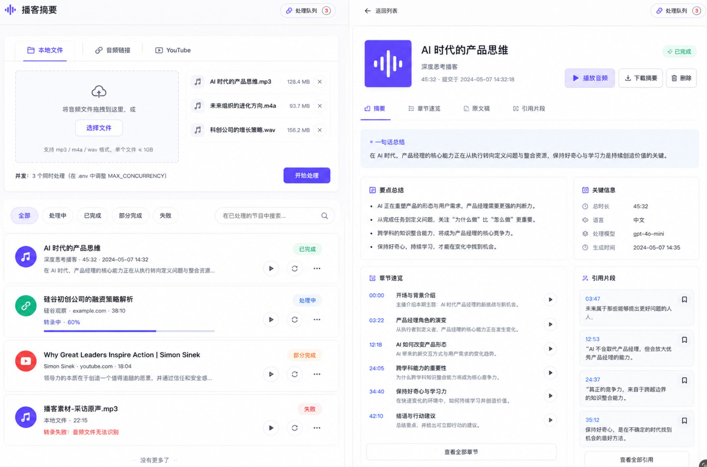

快速理解
用一句话 hook 与结构化摘要快速判断本集价值，减少无效收听时间。
支持音频输入、云端转写、结构化总结、章节复盘、可信引用、音频摘要与 Markdown 导出，面向真实学习场景，而不是一次性的 AI 总结 demo。

一个 60 到 90 分钟的播客往往包含大量信息。用户需要先判断是否值得深入，再定位重点片段，最后把内容沉淀到自己的知识库。
用一句话 hook 与结构化摘要快速判断本集价值，减少无效收听时间。
通过章节、关键点、原文 quote 与时间戳，回到音频证据本身。
导出 Markdown/JSON，让播客内容进入 Obsidian 等长期知识系统。
支持本地音频、直接音频链接与 YouTube 链接，也支持批量提交。
获取音频、校验格式、限制时长与大小，避免无效任务进入后续流程。
生成带时间戳的 transcript，为章节、quote 和音频跳转提供基础。
通过精心设计的提示词，把长文本转成符合阅读直觉的结构。
Background、Core Argument、Agreement、Conclusion 帮助快速判断价值。
分章节要点、原文 quote、时间戳跳转和实体列表支持深入复盘。
导出 Markdown、JSON，也可以按需生成 TTS 音频摘要。
结果进入 Obsidian / Notion / 个人知识库，完成长期沉淀。
本地音频、音频 URL、YouTube、批量提交，覆盖用户真实来源。
Local file / URL / YouTubeASR 转写、LLM 总结、TTS 音频摘要，形成完整多模型链路。
ASR / LLM / TTS快速浏览负责判断价值，章节复盘负责定位重点，quote 负责验证依据。
Browse → Review → Verify动效、进度反馈、章节展开、quote 点击跳转，让等待和切换都有明确状态。
Motion / Progress / SeekMarkdown / JSON / Audio digest 多种输出，把播客变成可复用资料。
MD / JSON / Digest先交代背景，帮助用户知道这集在讨论什么问题。
提炼核心主张，让用户快速抓住节目真正想表达的内容。
整理关键共识、判断或启发，形成可复述的观点。
给出收束判断，帮助用户决定是否继续深入。
快速浏览回答“这期值不值得看”，分章节总结回答“重点在哪里”，quote 和时间戳回答“原文是不是这样说”。
用户可以把生成的 Markdown 导入 Obsidian，把一次性听过的内容转化成可搜索、可引用、可复习的知识资产。
来自本地文件、音频 URL 或 YouTube 的原始长内容。
转写、快速浏览、章节复盘、实体列表和可信 quote。
保留层级、标题、要点和引用，适合进入笔记软件。
在 Obsidian / Notion 中继续复习、引用、写作和联想。
项目打通了音频输入、AI 理解、结构化复盘、可信引用、音频摘要和 Markdown 知识沉淀，让播客内容真正变成可以复用的学习资产。
从“听完一集播客”到“得到可验证、可复盘、可沉淀的知识材料”。